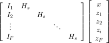
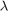
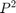

Network Slice
Contents
Linear constraint without consdiering the bound constraint.
As takes the following form

where
![$$I_f = \left[ \begin{array}{cccc}
\alpha_f & & & \\
& \alpha_f & & \\
& & \ddots & \\
& & & \alpha_f
\end{array} \right],$$
$$H_s = \left[ \begin{array}{cccccccccc}
-h_{1,1} & \cdots & -h_{N,1} & & & & & & & \\
& & & -h_{1,2} & \cdots & -h_{N,2} & & & & \\
& & & & & & \ddots & & & \\
& & & & & & &-h_{1,P} & \cdots & -h_{N,P}
\end{array} \right],$$
$$ x = \left[\begin{array}{c}x_1\\x_2\\ \vdots\\x_P\end{array}\right]$$
$$ z_f = \left[\begin{array}{c}z_{1,1,1f}\\ \vdots\\ z_{N,1,f}\\z_{1,2,f}\\
\vdots\\ z_{N,2,f}\\ \vdots\\z_{N,P,F}\end{array}\right]$$](Slice_eq01745813117052402191.png)
According to the martix formulation, the number of non-zero elements in As is equal to F*(P+nnz(Hs)), where nnz(Hs) is equal to the number of nonzero elements in I_node_path.
node_vars is index by (node,path,function). node_load = sum(f, node_vars(:,:,f).*I_node_path).
Alternative way to compute the node load.
col_index = (1:NN:((NP-1)*NN+1))';
col_index = repmat(col_index, 1, NV);
for c = 2:NV
col_index(:,c) = col_index(:,c-1) + NN*NP;
end
col_index = col_index(:);
As = zeros(NN, NP*NV);
for row_index = 1:NN
As(row_index, col_index) = repmat(this.I_node_path(row_index,:),1, NV);
col_index = col_index + 1;
end
vn = As*node_vars;Properties
- Topology: Normally, the network slice will not run shrtest path algorithm, so the absolute value of the adjacent matrix of Topology does not matter. On the other hand, the link and node capacity of the slice is also not determined until the substrate network allocate the resource to the slice.
- VirtualLinks : fields include PhysicalLink, Price, Load.
- VitrualNodeMap : fields include PhysicalNode, Price, Load.
- NumberVirtualNodes get
- NumberVirtualLinks get
- NumberFlows get
- NumberPaths get
Methods
- getPathId : find the path's local identifier.
pid = getPathId(slice, path)
- optimalFlowRate : find the optimal flow rate that maximizing the net profit of the network slice.
rate = optimalFlowRate(this, x0)
- optimalFlowRateCompact : find the optimal flow rate that maximizing the net profit of the network slice.
x = optimalFlowRateCompact(this, x0)
The optimizition procedure in this method remove the unnecessary components from the independent variable x, so that the problem scale is cut down.
- fcnUtility static : Evalute the objective function and gradient.
[profit, grad]= fcnUtility(var_x, S)
grad: the gradient value of the objective function. The upper bound number of non-zero elements in the gradient vector: the gradient on path variable is nonzeros, so there is P components; whether the gradient on node variable is zeros is decided by the node-path incidence matrix, i.e. nnz(I_node_path)*F.
- fcnUtilityCompact static : Evalute the objective function and gradient.
[profit, grad]= fcnUtilityCompact(act_var_x, S)
Only active independent variables are passed into the objective function.
- fcnHessian static : Hessian matrix of the Largrangian.
hess = fcnHessian(var_x, ~, S)
Since the problem only contains linear constraint, the hessian matrix of the Largrangian is equal to the second derivatives of the objective function, and the Largrangian multipliers  takes no effect. The Hessian matrix contains only  nonzeros elements on the diagonal, which is the second derviatives on path variables.
- fcnHessianCompact static : Compact form of Hessian matrix of the Largrangian.
hess = fcnHessianCompact(act_var_x, ~, S)